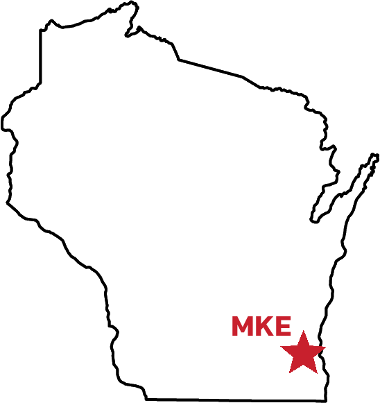

DJ DEV
My Story
I've never been great at working with people. That's why I had to start Redlabel.
If you haven't met me at your favorite Wisconsin concert venue before, I go by DJ Dev and I'm from Milwaukee, Wisconsin. I've loved music for my entire life, and it's been a blessing and a curse. I've been blessed with the opportunity to continuously make music central to my everyday life, and cursed with the inability to find anything that gives me quite the same feeling and satisfaction that music does. Money, maybe, but there's not a whole lot of that in this business.
There was money in the things I thought I might do if I finished college. But after two semesters at UW-Madison, I realized my heart wasn't in it. I was wasting my time, something I'm not a big fan of doing. The only thing I was having fun doing was producing beats in my dorm room and doing my radio show on WSUM, the student radio station. I quickly realized that my passion had to become practical if I was going to spend so much time on it. I dropped out of the big, state university and transferred to the Madison Media Institute, where I began an audio engineering degree. Working with audio all day introduced me to people that had the same addiction to music that I did, and I began to see the power of having a collective around you to support the ideas you have individually. But I still was awful at expressing that, and retreated to my lowly apartment to work on my beats alone every night after I finished classes for the day.

After realizing my own production probably wasn't going to get me into the stratosphere with the way Wisconsin's musical infrastructure was set up, I began getting serious about DJing so I could have a real hustle. Madison's a college town with more bars than there probably are DJs in the whole city, so DJing for the right crowds is actually fairly lucrative. Again, not so much in the financial sense, but in a way that I could make a little money doing what I would probably be doing for myself at home: playing a lot of music. Hip-hop is the genre I love most, so I also began to open up for hip-hop shows at venues in Madison. It was finally starting to feel like my curse wasn't so bad, and my blessings were getting bigger. Playing on the same stage as my favorite artists, albeit an hour earlier than them, was something I never thought I could do.
After doing that and the bar scene for about a year, my 2015 is where things really began to change. I began to get attention from just outside of Madison, and I even did the right networking to get a few sets in Milwaukee. I was DJing for local rappers that I liked (and some I didn't like, but usually just once). This music thing really started to feel real. I even started mixing in some of my own productions to my mixes, and people seemed to like them. I was getting pretty good at recording and engineering as well, and managed to get a little work here and there working with artists out of the WSUM production studio. Things felt good.
But see, me and success don't get along real well. I think a lot of artists can relate to that. We're doing this because we have something inside of us that we have to get out at all times, and that something can consume us when the music's over. Working mainly by myself around the clock, I felt like I was losing myself a little bit and losing focus. I was only ever working, sleeping, or trying to transition between the two. There were always ways to get sidetracked - hangovers, drugs, lack of motivation. I hated companionship, but hated the feeling I had after I got a little bit of it even more, because it was right back to doing the hard work myself. The music world is just as unequal as the rest of the world, and moving from the class you're in up to the next class is a Herculean task.
I guess.
Around November of 2015, I was burned out. I thought I might be done for a little while - I did some bad shows, worked with some bad artists, and was starting to think that I probably couldn't ever be more than what I was at the time. Like I said before, you don't make it to the stratosphere being from Wisconsin. I was going to name some exceptions here, but there really aren't any. The Violent Femmes? The Bodeans? No one cool. Butch Vig, I guess.
Regardless, it really felt like I was hitting a dead end. I brought this up with a few of my fellow musicians, and most of them had been there before or were right there with me. But one of them, Bhairav - one of my better friends in the business and one of the best producers I had ever met - couldn't believe what I was saying. He was always a dreamer, pitching me on how he was going to market his music before he even put it out. But this time, I couldn't help but agree with him, since he was basically giving me the positive version of the negative thoughts in my head. To me, I had given up my legitimate path to a happy life, and I had made a mistake. To him, I was making a mistake by thinking I had made a mistake. He gave me one more marketing pitch: we were in this together now, and we were starting something. No more being alone; we were gonna make it, and we were gonna make it together.
I'm still not that great at working with people. But I do love seeing the work people do. Whether it's Bhairav's beats, recording Dante in the studio, or going out and seeing people vibe to my DJ sets. Redlabel is for people like me, who want to be special but also know they need a team to do it. I'm happy to not be alone anymore, and I'm really doing what I always wanted to do: be my own boss, and do it my way. If I got this far myself, who knows how much farther I can go with a team around me?